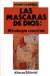

Libros
Hoy es el día del Libro del Libro y del Derecho de Autor, y Ricardo me ha lanzado un desafío (¿un meme?), que consiste en recomendar algún libro.
Dificil, sobretodo porque he leido tanto y cuesta elegir. Creo que no es suficiente con esto, así que vamos a crear una categoría específica para recomendar libros.
Entre la ciencia y el mito
Cuando un amigo me regaló “El Heroe de las Mil Caras”, yo llevaba muchos años leyendo solamente libros de tecnología, y de ciencia ficción. Fue entonces que al visitar su casa, curoseeando en su biblioteca encontré este libro, De este modo fue como leí por primera vez a Joseph Campbell, algo había oido de este libro, pues George Lucas lo menciona como una de las influencias más importantes en la creación de su trilogía de Star Wars. La riqueza de la mitología, el valor de los mitos, y de los ritos en nuestra sociedad están condensados en este pequeño libro, que es un anticipo de la gran obra de Campbell,“Las Máscaras de Dios”, mi segunda recomendación. Esta es una obra gruesa, de 4 volumenes, que explora la mitología en dos dimensiones, la dimensión histórica y la geográfica.
Campbell es un gran pensador, y maestro. Aunque muchas personas lo leen buscando una especie de guía espiritual, Campbell nunca trató de ser un Gurú, o una especie de maestro espiritual, simplemente elaboró una teoría de la mitología, descubrió la estructura de los mitos, y resaltó el valor para la psique social del mito.
Los mitos son a las sociedades, como los sueños a las personas, en esa frase se puede resumir lo que encierran estos libros.
Soy una persona de formación científica, y por supuesto no puedo dejar de recomendar un par de libros de ciencia. El primero es Atrapando La Luz, de Arthur Zajonc (ISBN: 8489691029). Un hermoso libro que nos cuenta la historia de la Luz, desde la concepción de antiguas religiones, que hablan de una lucha entre un Dios de la LUz, y otro de la Oscuridad, los estudios que le dedicaron Da Vinci, Newton, Goethe y Einstein. Escrito por un físico, este libro es la historia de la luz, desde todas las perspectivas, las místicas, artísticas, filosóficas y principalmente desde la ciencia.
Grandes libros
Momentos Estelares de la Humanidad, de Stephan Zweig(ISBN: 84-261-0102-X), si te gusta la historia, debes leer este libro, Zweig es un gran narrador, y este libro es un buen ejemplo de su estilo, pero rico en detalles asombrosos, por decir lo menos, y un indicador de como a veces un pequeño detalle puede significar la caida de una civilización.
“Gog y el Libro Negro”, y “La Historia de Cristo”, de Giovanni Pappini. Al igual que Zweig, Pappini es un gran escritor, pero Pappini es un gran provocador, y un converso sincero, y apasionado. Desconozco si Gog fue escrito antes de su conversión al cristianismo, pero es un libro provocador y si alguien quiere aprender a provocar, remecer la mente, Pappini es un gran maestro.